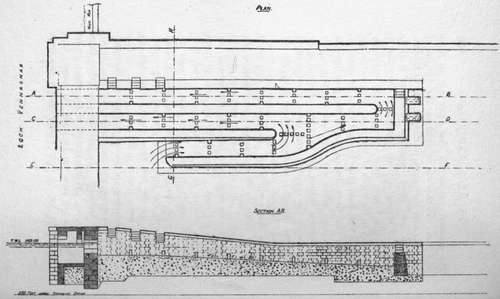
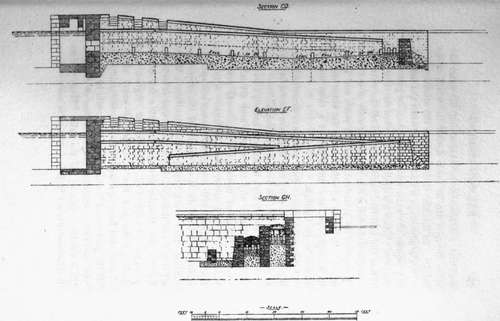

From Despair To Hope
Description
This section is from the book "Salmon Fishing", by W. Earl Hodgson. Also available from Amazon: Salmon Fishing.
From Despair To Hope
A proper pass is one through which salmon can go either in a high flood or when the water, though low, is sufficient to entice a run. It must be capable of inducing fish to enter it at any time. Every weir or fall is a special case, calling for special treatment. The mouth of the pass must be close enough to the fall to prevent the fish from going aside and losing the way. Many passes are successful in respect that fish enter and surmount them when, the spawning time being near, they are keen to get up; but only a few are suitable for spring fish, which will not even run on a weir until the temperature of the water is high, or for summer fish fresh from the sea, which are not much inclined to effort. All passes with barriers across them are unsuitable. Salmon will not jump over the barriers. Some of these barriers have openings at one side, each at the alternate side, giving the water a zig-zag course; but, if there is flow enough to bring fish up the river, the rush through the opening of the pass is so great that they are unable to push through.
When a pass of this kind is in working order too little water goes through it to entice the fish to enter. It does let up fish that have been a long time just below, and can proceed when the exact opportunity arises; but it is of little use as regards either fish suitable for sport or newly-arrived gravid fish seeking to go far inland.
Of what design, then, is the ideal pass ? The difficulties to be overcome not being uniform, there is no single design that will meet all cases; but the essential principles have been discovered, and are capable of being set forth by an example. When the passes at Loch Vennachar are reformed they will constitute a model system. The work is going on under the charge of Mr. J. R. Sutherland, Engineer to the Corporation of Glasgow, which draws part of its water-supply from the lake. Mr. Sutherland has kindly sent to me a copy of the design, which I present on a reduced scale. A general explanation of the principles embodied in a proper pass I give in the words of Mr. Malloch, by whom, after much expert thought, the Vennachar design was drafted.
"Having taken a great interest in fish passes during thirty years, and having inspected passes all over the country, I came to the conclusion that there was great room for improvement. After several experiments, I found that I had overcome all the defects of the existing passes. These experiments I have put into practice, and I have found them successful beyond my expectation.
"The first important difference is that in my passes the gradient is 1 in 20, instead of being from 5 to 10, as in most of the old passes. The Deanston Pass, on the Teith, which is 1 in 27, is exceptional. This came about somewhat by accident. The weir was formed before the pass, and the weir was 1 in 27.
The gradient was so flat that there was no need for a pass. All that was required was that the run of the water over the smooth pitching should be broken.
"The next most important difference is that, instead of having only one opening for the water to go through, I have from three to eight openings, according to the width of the pass. The advantage of this is that from three to eight times the quantity of water that flows through the old pass goes through the openings before any gets over the top. This great increase entices fish to enter. Even if more than double the quantity went down, the fish could easily run through; whereas, with so much, the old pass would be quite useless.
"The stones which are placed in the pass stand from 18 inches to 30 inches high, according to the size of pass. They are placed so that each row will be opposite its neighbour, breaking the force of the water 27 per cent. The fish do not have to jump over each barrier, as in the old pass-a task they detest and usually decline. They swim through the openings with the greatest ease, and never attempt to jump over the top. The gradient being so flat, they swim up the pass more quickly than one can walk ; fish never remain in the pass.
" The advantages of the flat gradient and the openings are that spring and summer fish new from the sea go straight through. In this the pass differs from all other passes. Where control of the water can be got at falls the pass can be made the same width throughout; but at weirs where control has been rendered unattainable by abstraction of water for mills the pass can be made double the width at the intake. In this also it differs from the others.
Salmon Passes on North Side of River Channel at outlet from Loch Vennachar as they will he when reformed.
" The advantage is that at times when the mills do not require the water double the quantity goes down the pass. There is a similar result when the river rises. When the mill lead cannot contain all the water the pass gives the fish a free run in any state of the river. It requires no attendant from one year's end to the other. In nearly all other passes the water requires to be regulated, and for weeks at a time fish are unable to get through.
" Not a few passes such as I have described have been erected. In every case fish have ceased to jump at falls and weirs; no fish remains behind."
Continue to:
Tags
salmon, fish, river, fishing, trout, loch, flies, fishing flies